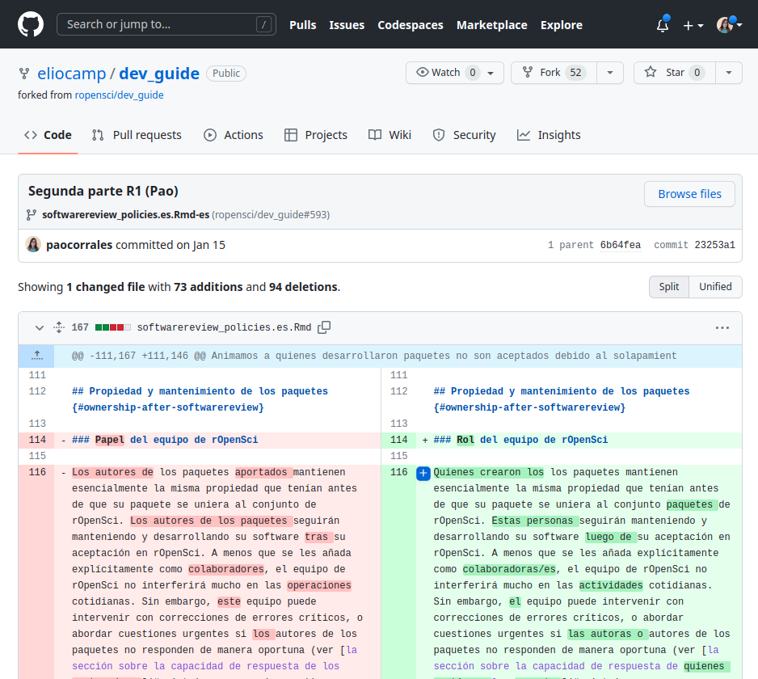
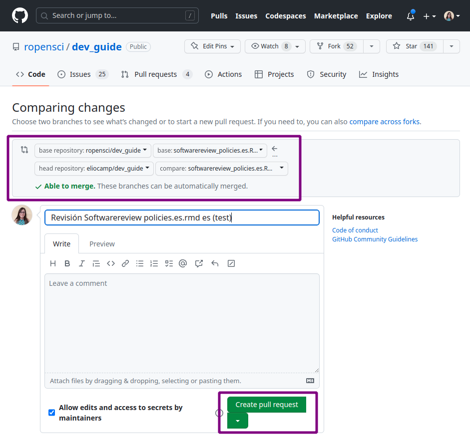

3 Guía para traducir y revisar
3.1 Cómo colaborar
3.1.1 Con un idioma activo
Puedes revisar la lista de idiomas para los que hay proyectos de traducción activos y sus estados en el readme del repositorio de esta guia. Allí encontrarás el nombre de quien mantiene cada proyecto para que puedas ponerte en contacto y links a los proyectos activos en ese idioma. Las iniciativas de traducción cuentan con un canal en el Slack de rOpenSci por idioma donde se discute y se toman decisiones sobre la traducción, las cuales son plasmadas en las directrices específicas del idioma en esta guía y un glosario.
Antes de comenzar es importante que te familiarices con el material original. Además, te sugerimos leer esta guía (en particular las directrices aplicables a tu idioma) y contactarte con las personas que ya se encuentran trabajando. No dudes en hacer todas las preguntas que necesites, por ejemplo ¿cuánto tiempo tienes que dedicarle? o cuestiones técnicas como ¿qué pasa si me encuentro con problemas en GitHub?
3.1.2 Con un idioma nuevo
Si tu idioma no está entre los idiomas con proyectos activos listados aquí, ponte en contacto con el equipo de rOpenSci para proponerlo. Puedes enviar un mail a info@ropensci.org o abrir un issue en este repositorio.
Ten en cuenta que iniciar un nuevo proyecto requiere un compromiso para gestionar el repositorio donde se llevará a cabo toda la revisión. Pedimos a quienes gestionan proyectos de traducción el mismo compromiso que pedimos a quienes gestionan paquetes de nuestra suite: 2 años de mantenimiento luego de finalizada la traducción o poder encontrar a otra persona que se haga cargo.
Además dado que cada capítulo o artículo debe ser revisado por al menos 2 personas, te recomendamos invitar a tu comunidad local antes de comenzar el proceso.
3.2 Aspectos técnicos de la revisión
En esta sección usaremos como ejemplo la guia “Paquetes de rOpenSci: Desarrollo, mantenimiento y revisión por pares”, pero todos los aspectos técnicos para hacer una revisión también aplican a otros materiales de la organización.
El código fuente que genera la guía vive en github.com/ropensci/dev_guide, y está organizada en archivos con formato .Rmd (RMarkdown) que contienen texto y a veces también código de R. En este caso también hay algunos archivos de configuración que requieren ser traducidos para que la guía en el nuevo lenguaje esté completamente traducida.
Cada capítulo tiene un archivo .Rmd por idioma, con un sufijo que identifica el idioma usando su código de dos letras (según ISO 639-1). Por ejemplo, el capítulo “Políticas de la Revisión por Pares de Software” tendrá su versión original en inglés en softwarereview_policies.Rmd y su versión traducida al español en softwarereview_policies.es.Rmd.
Si el proyecto de traducción está en marcha, encontrarás una serie de pull request, uno por cada archivo a traducir, generados con el paquete babeldown que contienen el texto traducido automáticamente. Cada uno de estos pull requests tienen una branch asociada, esto será importante más adelante. De hecho si hay muchos proyectos de traducción en marcha, es posible que te encuentres con muchos pull requests. Te recomendamos filtrar usando la etiqueta asociada a tu lenguaje, por ejemplo la etiqueta para la traducción al español es “traducción 🧉” o ver el estado de cada pull requests en el proyecto de GitHub correspondiente a tu lenguaje.
Por seguridad y organización, quienes realicen la revisión no van a tener premiso de escritura en este repositorio principal de rOpenSci. De modo que quien está a cargo de mantener el proyecto deberá hacer un fork (que llamaremos repositorio de trabajo) y darle permiso de escritura a todas las personas que revisen o contribuyan. Este fork tendrá las mismas branchs que el repositorio principal; esto es clave ya la revisión de cada archivo se realizará sobre la branch asociada a su traducción.
Para comenzar a contribuir lo primero que debes hacer es clonar el repositorio de trabajo. Para saber donde está ubicado, hablar con la persona a cargo del proyecto o consulta en el canal del Slack. Una vez que tienes el repositorio de trabajo clonado, puedes empezar a trabajar localmente en tu computadora.
Ya está todo listo para empezar una revisión, pero ¿por dónde empezar? Cómo en todo proyecto colaborativo, es importante ponerse de acuerdo entre todas las personas para saber que va a hacer cada una. Nuevamente te sugerimos conversar en el canal de Slack para preguntar como es la división de las revisiones. Tambien podes hacer un comentario en el pull request para preguntar si te podes hacer cargo de revisar ese capitulo.
3.2.1 Revisión 1
Digamos que te tocó hacer la revisión 1 del capítulo “Políticas de la Revisión por Pares de Software” que se encuentra en el archivo softwarereview_policies.es.Rmd. Estos son los pasos a seguir.
En tu repositorio local:
Activá la branch asociada al archivo que vas a revisar. En nuestro ejemplo sería
softwarereview_policies.es.Rmd-es`.Abrí el archivo
softwarereview_policies.es.Rmd. Es posible que veas cosas para mejorar inmediatamente, ya que la traducción automática hace un buen trabajo pero no es perfecta.-
Comenzá a revisar el texto. Para esto te sugerimos tener la versión en inglés al lado, es posible que necesites volver a la versión original para entender el contexto de alguna frase o palabra que el traductor no haya podido traducir correctamente. Para esto puede usar la versión web del material que estás traduciendo o la pestaña “Files changed” del PR en el repositorio principal.

De manera periódica, o cuando completes la revisión, tendrás que hacer un commit con los cambios que generaste. Muchas veces el contenido de los archivos será extenso y necesitarás bastante tiempo para completar la revisión. En estos casos te sugerimos hacer commits al menos luego de cada sesión de trabajo indicando en el mensaje hasta que línea del archivo llegaste. De esta manera, si necesitaras delegar la revisión en otra persona, esa persona puede revisar la historia del archivo y retomar donde vos dejaste.
Hasta ahí la revisión solo vive en tu repositorio local, el paso siguiente es hacer un push al repositorio de trabajo. Es muy importante que el push sea a la branch asociada al archivo en que estas trabajando, de lo contrario no podremos conectar tu revisión con la traducción original.
Una vez que completaste tu revisión, es importante que avises a quien mantiene el proyecto o a la persona asignada a la revisión 2, si la hay.
3.2.1.1 Objetivos de la revisión 1
Esta primera revisión tiene como objetivo hacer una lectura detallada de la traducción automática para :
Asegurarse de que el sentido de la oración o párrafo se mantiene.
Revisar que se hayan usado los términos del glosario acordados por la comunidad según el contexto.
Aplicar las decisiones de estilo siempre que se pueda. Por ejemplo, en español decidimos evitar la marca de género en sustantivos y adjetivos y para ello parafraseamos oraciones o usamos “las/los” si lo primero no es posible.
Revisar que los bloques de código o marcación de Markdown no hayan sido afectados.
Traducir nombres de variables y comentarios visibles en los bloques de código siempre que corresponda.
Seguramente queden dudas y es posible que alguna cosa pase de largo. Las decisiones de estilo suelen ser la más difíciles de aplicar y a veces es necesario consultar con el resto del equipo o charlarlo luego con quien haga la revisión 2.
3.2.2 Revisión 2
Te tocó la revisión 2, buenísimo. Nuevamente usaremos como ejemplo el capítulo “Políticas de la Revisión por Pares de Software” que se encuentra en el archivo softwarereview_policies.es.Rmd. Quien hizo la revisión 1, a quien llamaremos R1 de este capítulo seguramente generó uno o mas commits con cambios sobre la traducción original. Esto significa que tu trabajo no arranca en cero, estos son los pasos.
En tu repositorio local:
Activa la branch asociada al archivo que vas a revisar. En nuestro ejemplo sería
softwarereview_policies.es.Rmd-es`.Haz un pull para descargar todos los cambios que hizo R1 y tener el archivo actualizado. Puedes asegurarte que esto es así revisando la historia del archivo en el repositorio local.
-
Comenzá a revisar el texto. Para esto te sugerimos abrir la historia del archivo para visualizar los cambios que realizó R1. Esto te permitirá saber si una frase o palabra proviene de la traducción automática o de otro ser humano.

De manera periódica, o cuando completes la revisión, tendrás que hacer un commit con los cambios que generaste. Muchas veces el contenido de los archivos será extenso y necesitarás bastante tiempo para completar la revisión. En estos casos te sugerimos hacer commits al menos luego de cada sesión de trabajo indicando en el mensaje hasta que línea del archivo llegaste. De esta manera, si necesitaras delegar la revisión en otra persona, ella podrá revisar la historia del archivo y retomar donde vos dejaste.
Hasta ahí la revisión solo vive en tu repositorio local, el paso siguiente es hacer un push al repositorio de trabajo. Es muy importante que el push sea a la branch asociada al archivo en que estas trabajando, de lo contrario no podremos contectar tu revisión con la traducción original.
Una vez que completaste tu revisión, ¡el capítulo está listo! Sin embargo, esta nueva versión solo vive en el repositorio de trabajo. Tendrás que abrir un pull request en el repositorio principal para que lo revisé alguien con rol de editor y sea aprobado. En la siguiente sección veremos como abrir el pull request.
3.2.2.1 Objetivos de la revisión 2
Esta segunda revisión busca generar un texto que mantenga el contenido original pero que además suene natural en el nuevo lenguaje. Para esto hay que tener en cuenta:
Que se respeten el uso de términos según el glosario y el contexto específico.
Que se use el formato definido por la comunidad, por ejemplo usar formato italizado para palabras que se mantienen en inglés.
Aplicar las decisiones de estilo que no haya visto R1 o que haya dejado pasar. Por ejemplo, en español intentar reemplazar cualquier “las/los” por una frase sin marca de género.
Que, en general, las frases se entiendan y suenen bien evitando las traducciones literales.
Es posible que en el proceso de la revisión 2 necesites consultar con R1 sobre las decisiones que tomó o con el resto de la comunidad si hay alguna frase o término que te genera dudas. Es posible que luego de esto sugieras incorporar nuevos términos al glosario o actualizar esta guía de traducción.
3.2.3 Pull Request y edición de un capítulo
Una vez que el proceso de revión de un capítulo está completo, es hora de transferir esa nueva versión del repositorio de trabajo al repositorio principal de rOpenSci. Para esto R2 tendrá que abrir un pull request que comparé la versión revisada con la versión que solo tiene traducción automática.
Asegurate que todos los cambios están en el repositorio de trabajo y que estás trabajando sobre la branch asociada al archivo en revisión, en nuestro ejemplo será
softwarereview_policies.es.Rmd-es.Si estás en la branch correcta, en la interfaz web de GitHub observarás lo siguientes:

GitHub identificó que hay cambios nuevos (pushes) en la branch y sugiere compararlos y hacer un pull request al repositorio principal.
- Haz click en el botón “Compare & pull request”.
- A continuación tendrás la opción de modificar el título del pull request y dejar un mensaje. Te sugerimos 2 cosas:
Cambia el título para identificar que se trata de una “Revisión”. Es importante para separarlo del pull request de la traducción automática.
En el cuerpo del mensaje menciona a quien mantiene el proyecto de traducción para que esté al tanto del avance y pueda luego continuar con el proceso.

- Antes de crear el pull request es muy importante que revises que se haga desde la branch correcta. Esta es la única manera de conectar el trabajo de revisión con la traducción automática y poder unificar las versiones correctamente.
- Y listo! Haz click en “Create pull request”.
A partir de este momento, la revisión queda en manos de quien mantiene el proyecto de traducción. Esta persona deberá revisar el pull request y hacer consultas a R1 y R2 antes de mergear los pull requests.
3.3 Revisión global
El proceso de revisión es un proceso colaborativo en el que, esperamos, participen muchas personas. Esto tiene la gran ventaja de incorporar distintas miradas sobre el uso del lenguaje y generar una traducción que represente a la mayor cantidad de personas. Sin embargo, con toda esta diversidad de miradas y a pesar de la guía específica de cada lenguaje, es posible que las revisiones sean heterogéneas, que a veces se uses criterios distintos o simplemente haya errores de tipeo.
Por todo eso es importante que el proyecto de traducción se complete con una revisión global de todo el material. Sugerimos fuertemente que esta revisión general la realicé una sola persona para mantener un criterio único a lo largo de todo el texto.
Ahora si, la traducción está lista. ¡Gracias y felicitaciones!